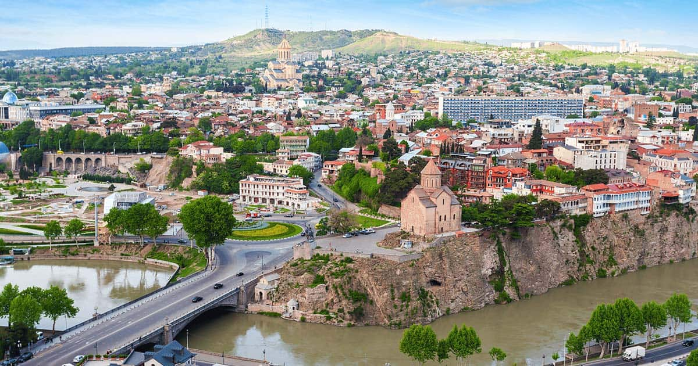

თბილისი (1936 წლის 17 აგვისტომდე ტფილისი[2][3]) — დედაქალაქი და მუნიციპალიტეტი[4] საქართველოში; 1922–1936 წლებში ერთდროულად იყო ამიერკავკასიის სფსრ დედაქალაქი; მდებარეობს აღმოსავლეთ საქართველოში, თბილისის ქვაბულში, მდინარე მტკვრის ორივე სანაპიროზე, ზღვის დონიდან 380–600 მ სიმაღლეზე, ჩრდილოეთით ესაზღვრება საგურამოს ქედის სამხრეთი მთისწინეთი, აღმოსავლეთით — ივრის ზეგნის ჩრდილო-დასავლეთი მონაკვეთი, დასავლეთით და სამხრეთით კი — თრიალეთის ქედის განშტოებები. ქალაქს 502 კმ² ფართობი უჭირავს[5] და 1,152 მილიონზე მეტი მცხოვრები ჰყავს.
თბილისის ძველი სახელწოდება იყო ტფილისი. ადრინდელ ქართულ წერილობით ძეგლებში სწორედ ასეთი ფორმითაა ის დამოწმებული. მაგ. ევსტათი მცხეთელის აბო ტფილელის წამებასასა და „მოქცევაჲ ქართლისაჲს“ ტექსტებში. საქართველოს დედაქალაქის ძველი ფორმიდან, ტფილისიდან წარმოსდგება მისი სახელი მეზობელთა ენებზე. მეზობელ ქვეყნებში ძველად ტფილისი სხვადასხვაგვარად გამოითქმოდა. თავდაპირველად სომხურად ტფილისი „ტფღის“-ად (სომხ. Տփղիս) ჟღერდა, ბერძნულად (ბიზანტიური ხანიდან) გვხვდება „ტიფლის/ტიფლიზა“ (ბერძ. Τιφλίδα), ხოლო ლათინურად როგორც „ტიფლისი“, „ტიფლიტანა“ ასევე „ტრიფელისი“ (ლათ. Tiphlis/Tephlis/Tiphilis; Tiphlitana; Triphelis).[6][7] ასევე ჟღერს თბილისის სახელი არამეულ (არამ. ܛܦܠܝܣ; תיפליס), სპარსულ (სპარს. تفلیس) და თურქულ ენებზე (თურქ. Tiflis). საგულისხმოა ასევე თბილისი კავკასიურ ენებზე. ის ასე გამოითქმის: მეგრულად — „ქართი“, აფხაზურად — „Қарҭ“ [ქართ]. რუსული ფორმა „Тифлис“ დამკვიდრებული იყო 1936 წლის 17 აგვისტომდე, როდესაც სსრ კავშირის ცენტრალურმა აღმასრულებელმა კომიტეტმა დაადგინა, რომ თანახმად სსრ კავშირის შინაგან საქმეთა სახალხო კომისარიატის სახელმწიფო აგეგმვის და კარტოგრაფიის მთავარი სამმართველოს ბიუროს წარდეგნისა დამტკიცებულ იქნა ქალაქის სახელის ახალი ფორმა.[8] რუსული ფორმა „Тбилиси“, რომელიც წარმოადგენს ქართული ახალი სახელწოდების სახელობით ფორმას, თანდათან დამკვიდრდა და განმტკიცდა რუსულ ლიტერატურაში. რაც შეეხება ქართული სახელწოდების ძველ ფორმას, მას რამდენიმე ხანი კვლავაც იყენებდნენ. 1937 წლიდან საბოლოოდ დამკვიდრდა ქალაქის დღევანდელი სახელწოდება — თბილისი.
ჩთალო, მთაწმინდა, ვარკეთილი, გლდანი